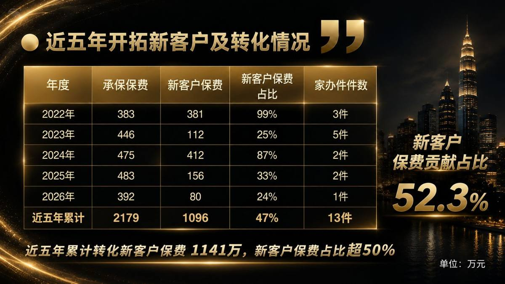

01
3分鐘複習
錢文曦老師是年輕世代的高客經營代表，這堂課是他的「工作匯報」：從名單到保單之間那段遙遠的距離，靠的是圈層深耕、三大服務體系與三輪面談。近五年他累計轉化新客戶保費超過千萬，新客戶保費占比 52.3%，家辦保單 13 件——方法對了，千萬保單和億元保單都在路上。
圈層深耕
＋
高客服務體系
＋
三輪面談
＝
精準轉介紹・高客成交
一句話先交心，再交易。
他每一位千萬級客戶，都有過一次超過 3 小時的深度面談——高客不是沒時間，是看你的內容值不值得。
行業本質保險是「信任資產變現」的行業。
轉介紹的信任成本最低；持續服務累積的信任，就是你最值錢的資產。
高客定義高客是把某個領域做得比別人好的普通人。
他也有七情六慾、有情感薄弱點。願意把時間交給這個部分，你就贏了一半。
